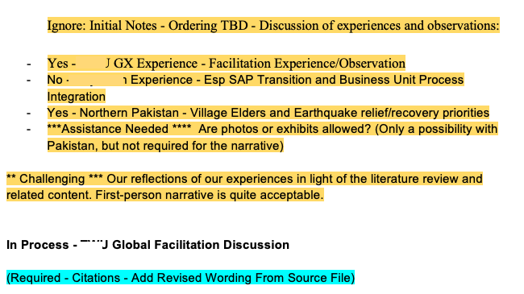
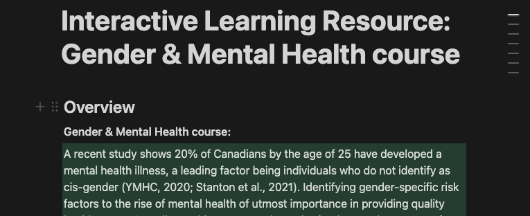
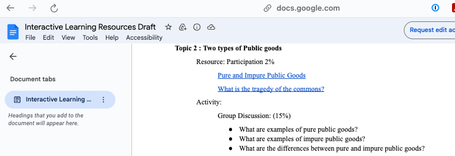

Philosophy of Teaching and Learning
In my research and practice of teaching and learning in higher education, I ground my work in three broad principles related to who learners are, what teachers do, and how teachers know what learners know.
Who We Are
Those who seek to learn to improve themselves and the world around them have inherent dignity and value.
This principle is expanded in the 5 Rs of Indigenous education (Tessaro et al. 2018): respect, responsibility, relevance, reciprocity, and relationships. The 5 Rs serve as a set of values grounded in the inherent value of all people and the importance of intentional work to foreground the perspectives of equity-deserving groups. When diversity, equity, and inclusion are prioritized and co-created, the entire community of learners benefits from working in an environment where it is safe to be different or wrong. The ultimate goal of education is to empower learners to fully realize their purpose and to flourish in their efforts to improve the world around them.
This principle is reflected in the structure of my courses where learners are always able to make meaningful choices about how their learning will be demonstrated. For example, assignments are always grounded in the course learning outcomes, and they require learners to apply the concepts of the course to their own context. It is the learner who determines relevance, and it is through the relationships developed in the context of the course community that relevant learning is expressed. Respect and reciprocity are demonstrated in the process of co-creating a community of inquiry where all members share the responsibility for the safety and well-being of others. The key to making this all happen is that I host assessment conversations with learners where we meet to discuss their work and come to a mutually agreeable assessment of the quality of their work in light of the course outcomes.
One learner in my class reflected on their experience during LDRS 663 in their final paper (some details are omitted for anonymity):
Reflecting on these experiences, I’ve come to realize that transformational learning through coaching and facilitation is not simply a collection of tools; it is a deeply transformative mindset rooted in empathy, openness, and a commitment to critically engaging with deeply held beliefs. This mindset has profoundly reshaped my … identity, broadening my understanding of what it means to lead a … community. It challenges the notion of … authority as merely instructive, moving it instead toward a collaborative, relational approach that invites people into a shared journey of growth and exploration. Through this lens, my purpose has evolved into guiding our [community] toward a new understanding of inclusivity—not as a trend, but as an essential … value grounded in love, curiosity, and respect for diverse perspectives.
What We Do
Learning is idealized as a cognitive apprenticeship which supports the process of sense-making in the context of complex ideas.
We know from Bloom (1984) that the most profound learning experiences occur in the context of sustained discourse between a learner (or maybe two or three) and an instructor (who can sometimes be a peer or other interested observer). This sense-making process must include the learner actively drawing connections between ideas and drawing conclusions that are relevant to their own contexts. Sense-making is often a difficult and tentative process, so it is incumbent on the instructor to allow learners to do the work of learning and to recognize that not all learners will achieve at the same pace. Learners exercise autonomy and agency when they are encouraged to exercise evaluative judgement (Tai et al. 2018) through the comparison of their own work to the work of both novice and expert others and to the intended learning outcome. The task of assessment is a similar process of the instructor making sense of what the learner has demonstrated in their process and the products of their work.
This principle is realized in my online courses in how I structure discourse, or the conversation around course concepts. Learners are required to demonstrate their process of coming to understand a topic or task, not only submit a final product. A ‘discussion forum’, which may use various platforms such as blogs or social media, in any of my courses is considered to be required, but not graded. The discussion forum is not graded because I want my learners to be free to express tentative or controversial ideas without fear of losing marks. Much like conversations inside the four walls of a brick-and-mortar classroom, which are not graded for accuracy, conversations in an online forum should be considered as works-in-progress as learners make sense of concepts and ideas. For graded assignments, learners are required to submit their working documents in addition to the final, polished version.
An example is this anonymized exerpt from a group project final submission.

Assessment conversations are a key component of allowing me to come to understand what the learner knows or can do. By having a conversation that includes talking about their working docs and the final product, I can get a clearer picture of the learner’s ability, I can ask clarifying questions in the moment, and the learner can provide valuable context to their work.
How We Know
If there is an end, it is when the teacher has become unnecessary.
Coming to know something (learning) is a result of what we do. When learners strive for a cognitive goal, they iterate based on their past knowledge combined with feedback they receive regarding their performance in relation to the goal (Carless 2019; Hattie and Timperley 2007). Consequently, learning is inextricably tied to the process of assessing learning. Traditional models of learning require significant time and effort on the part of instructors who are the primary source of feedback in the process. Contrary to that, when a learner is able to generate their own feedback on performance, they are no longer completely reliant on the instructor and can sustain and direct their own learning (Boud and Soler 2016). I believe this should become the primary and overarching goal of higher education institutions, to produce self-sustaining learners who work and live in communities of inquiy for the good of the world.
An example of how this is realized in my courses is that learners are free to choose their domains of inquiry in alignment with the intended outcomes of the course. One of the outcomes in EDCI335 is
Identify and evaluate various digital, networked, and open technologies and understand how they impact the learners and the learning process
Learners have meaningful options when it comes to meeting this objective. They can demonstrate their knowledge by creating a short learning experience using a Notion site where participants are led through a lesson in Gender and Mental Health, as below:

Or they may use Google Docs to teach others about the concept of Public Goods in economics.

By encouraging learners to customize their outputs and review each others’ work, they are allowed to engage in work that is more relevant to their own lives, and more likely to be able to sustain their learning after my course has completed.